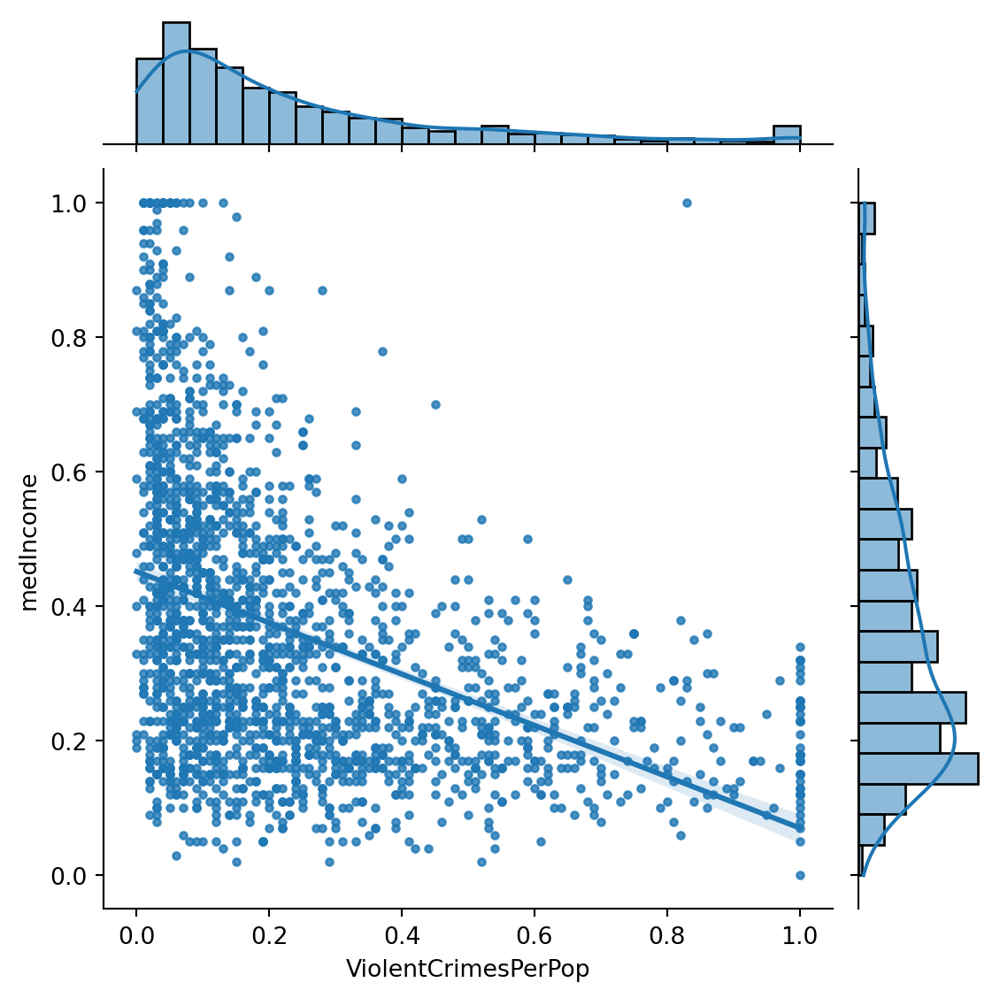
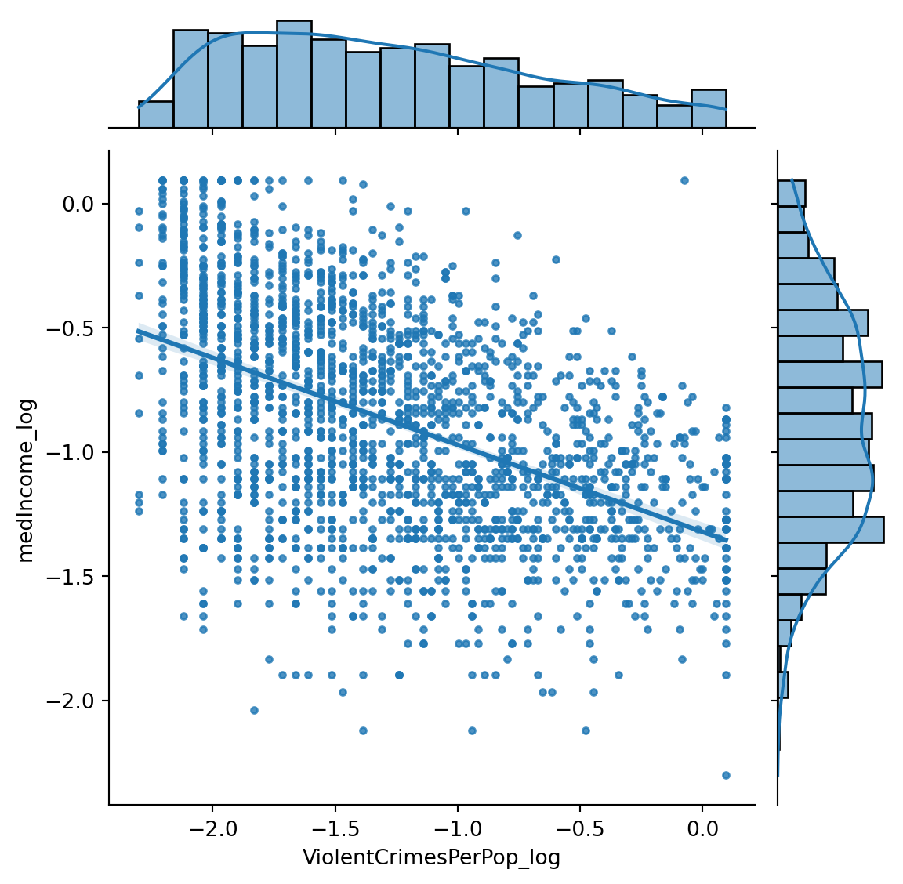

We are going to examine the data, fit and then cross-validate a regression model.
import pandas as pddf = pd.read_csv('data/censusCrimeClean.csv')df.head()
communityname
fold
population
householdsize
racepctblack
racePctWhite
racePctAsian
racePctHisp
agePct12t21
agePct12t29
...
NumStreet
PctForeignBorn
PctBornSameState
PctSameHouse85
PctSameCity85
PctSameState85
LandArea
PopDens
PctUsePubTrans
ViolentCrimesPerPop
0
Lakewoodcity
1
0.19
0.33
0.02
0.90
0.12
0.17
0.34
0.47
...
0.0
0.12
0.42
0.50
0.51
0.64
0.12
0.26
0.20
0.20
1
Tukwilacity
1
0.00
0.16
0.12
0.74
0.45
0.07
0.26
0.59
...
0.0
0.21
0.50
0.34
0.60
0.52
0.02
0.12
0.45
0.67
2
Aberdeentown
1
0.00
0.42
0.49
0.56
0.17
0.04
0.39
0.47
...
0.0
0.14
0.49
0.54
0.67
0.56
0.01
0.21
0.02
0.43
3
Willingborotownship
1
0.04
0.77
1.00
0.08
0.12
0.10
0.51
0.50
...
0.0
0.19
0.30
0.73
0.64
0.65
0.02
0.39
0.28
0.12
4
Bethlehemtownship
1
0.01
0.55
0.02
0.95
0.09
0.05
0.38
0.38
...
0.0
0.11
0.72
0.64
0.61
0.53
0.04
0.09
0.02
0.03
5 rows × 102 columns
One hundred features. Too many for us to visualise at once.
Instead, we can pick out particular variables and carry out a linear regression. To make our work simple we will look at ViolentCrimesPerPop as our dependent variable and medIncome as our indpendent variable.
We may wonder if there is more violent crime in low income areas.
Let us create a new dataframe containing our regression variables. We do not have to do this I find it makes our work clearer.
Plot our data (a nice page on plotting regressions with seaborn is here).
import seaborn as snssns.jointplot(data = df[['medIncome', 'ViolentCrimesPerPop']], x ='ViolentCrimesPerPop', y ='medIncome', kind='reg', marker ='.')

We may want to z-transform or log these scores as they are heavily skewed.
import numpy as np# some values are 0 so 0.1 is added to prevent log giving us infinity# there may be a better way to do this!df_reg.loc[:, 'ViolentCrimesPerPop_log'] = np.log(df_reg['ViolentCrimesPerPop'] +0.1)df_reg.loc[:,'medIncome_log'] = np.log(df_reg['medIncome'] +0.1)
/var/folders/7v/zl9mv52s3ls94kntlt_l9ryh0000gq/T/ipykernel_6191/3488182522.py:5: SettingWithCopyWarning:
A value is trying to be set on a copy of a slice from a DataFrame.
Try using .loc[row_indexer,col_indexer] = value instead
See the caveats in the documentation: https://pandas.pydata.org/pandas-docs/stable/user_guide/indexing.html#returning-a-view-versus-a-copy
df_reg.loc[:, 'ViolentCrimesPerPop_log'] = np.log(df_reg['ViolentCrimesPerPop'] + 0.1)
/var/folders/7v/zl9mv52s3ls94kntlt_l9ryh0000gq/T/ipykernel_6191/3488182522.py:6: SettingWithCopyWarning:
A value is trying to be set on a copy of a slice from a DataFrame.
Try using .loc[row_indexer,col_indexer] = value instead
See the caveats in the documentation: https://pandas.pydata.org/pandas-docs/stable/user_guide/indexing.html#returning-a-view-versus-a-copy
df_reg.loc[:,'medIncome_log'] = np.log(df_reg['medIncome'] + 0.1)
df_reg
communityname
medIncome
ViolentCrimesPerPop
ViolentCrimesPerPop_log
medIncome_log
0
Lakewoodcity
0.37
0.20
-1.203973
-0.755023
1
Tukwilacity
0.31
0.67
-0.261365
-0.891598
2
Aberdeentown
0.30
0.43
-0.634878
-0.916291
3
Willingborotownship
0.58
0.12
-1.514128
-0.385662
4
Bethlehemtownship
0.50
0.03
-2.040221
-0.510826
...
...
...
...
...
...
1989
TempleTerracecity
0.42
0.09
-1.660731
-0.653926
1990
Seasidecity
0.28
0.45
-0.597837
-0.967584
1991
Waterburytown
0.31
0.23
-1.108663
-0.891598
1992
Walthamcity
0.44
0.19
-1.237874
-0.616186
1993
Ontariocity
0.40
0.48
-0.544727
-0.693147
1994 rows × 5 columns
import seaborn as snssns.jointplot(data = df_reg[['medIncome_log', 'ViolentCrimesPerPop_log']], x ='ViolentCrimesPerPop_log', y ='medIncome_log', kind='reg', marker ='.')

Is log transforming our variables the right thing to do here?
What is the relationship between violent crime and median income? Why might this be?
Assuming the log data is fine, have we overfit the model? Remember that a good model (which accurately models the relationship between violent crimes per population) need to be robust when faced with new data.
Kfold cross validation splits data into train and test subsets. We can then fit the regression to the training set and see how well it does for the test set.
from sklearn.model_selection import KFoldX = df_reg[['ViolentCrimesPerPop']]y = df_reg[['medIncome']]# get four splits, Each split contains a # test series and a train series.kf = KFold(n_splits=4)
# lists to store our statisticsr_vals = []MSEs = []medIncome_coef = []for train_index, test_index in kf.split(X):# fit our model and extract statistics model = LinearRegression() model.fit(X.iloc[train_index], y.iloc[train_index]) y_hat = model.predict(X.iloc[test_index]) MSEs.append(metrics.mean_squared_error(y.iloc[test_index], y_hat)) medIncome_coef.append(model.coef_[0][0]) r_vals.append(metrics.r2_score(y.iloc[test_index], y_hat))
Does our model produce similiar coefficients with subsets of the data?
We can do this using an inbuild sklearn function (see here).
from sklearn.model_selection import cross_val_scorex = df_reg[['ViolentCrimesPerPop']]y = df_reg[['medIncome']]model = LinearRegression()model.fit(x, y)print(cross_val_score(model, x, y, cv=4))
[0.13047946 0.16281953 0.20013867 0.18240261]
What do these values tell us about our model and data?
You might want to carry out multiple regression with more than one predictor variable, or reduce the number of dimensions, or perhaps address different questions using a clustering algorithm instead with all or a subset of features.